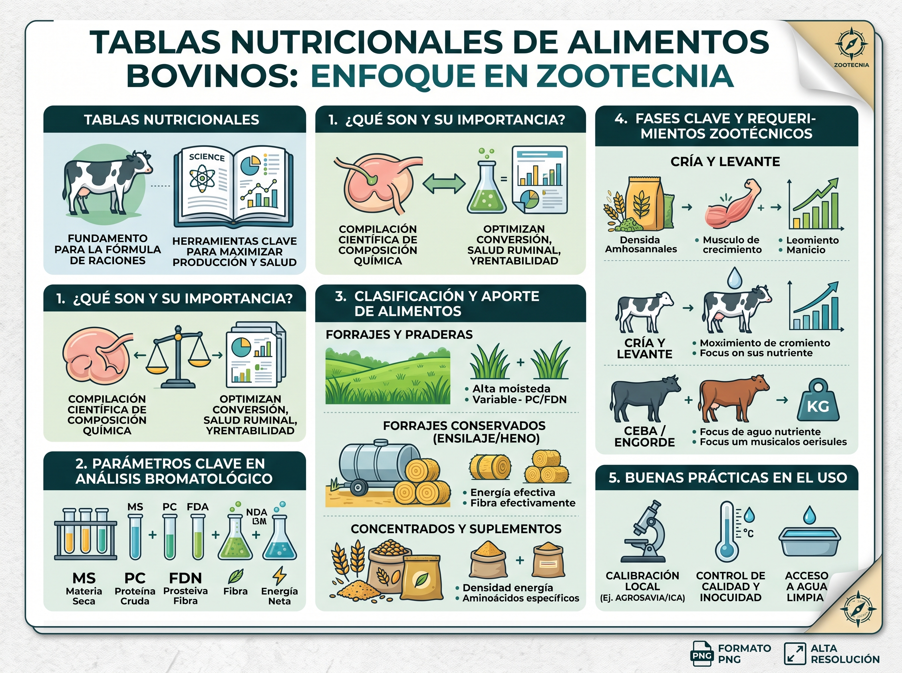

Nutrición Bovina de Precisión para Máxima Rentabilidad y Salud
Optimice el consumo de materia seca (CMS), balancee proteína y energía con base científica (NRC/FEDNA) y prevenga desórdenes metabólicos en ganado de carne y leche bajo pastoreo o confinamiento.
Índice de Salud Ruminal
Fibra Efectiva (FDNe) & Microflora Estable
Calculadora de Consumo y Balance Nutricional Bovina
Simule el Consumo de Materia Seca (CMS), requerimientos de proteína cruda ($PC$) y energía ($NDT$) según la fase productiva y forraje base.
Parámetros del Lote / Animal
Balance Estimado & Salud Ruminal
El nivel de fibra detergente neutro efectiva (FDNe) es suficiente para estimular la rumia, secreción de saliva y amortiguar el pH ruminal.
Directrices Zootécnicas para esta Dieta:
- Acceso ad libitum a agua limpia (relación 4:1 con materia seca).
- Suplementación mineralizada al 6-8% de Fósforo biodisponible.
- Monitorear bosta (consistencia puntuación 3 en escala de 1 a 5).
Parámetros Clave en Análisis Nutricional Bovino
Haga clic sobre cualquier parámetro para descubrir su significado fisiológico, rangos de referencia e impacto en la producción zootécnica.
Materia Seca (MS)
Es el contenido libre de agua. Todos los nutrientes se calculan obligatoriamente sobre base seca.
Proteína Cruda (PC)
Esencial para la síntesis de proteína microbiana en rumen y aporte al duodeno del rumiante.
Fibra Neutro Detergente (FDN)
Determina el límite físico de consumo voluntario por distensión ruminal y tiempo de tránsito.
Fibra Ácido Detergente (FDA)
A mayor porcentaje de FDA, menor es la digestibilidad aparente y el valor energético del pasto.
Nutrientes Digestibles (NDT)
Estimación calórica integral utilizada para predecir ganancia de peso y producción láctea.
Fibra Efectiva (FDNe)
Previene la acidosis ruminal estimulando la masticación y la producción de buffer salivar.
Materia Seca (MS)
Importancia Fisiológica:
El agua presente en los pastos frescos (que puede llegar al 85%) no aporta nutrientes. Todos los requerimientos del rumiante se calculan en gramos o kilogramos de Materia Seca. Un animal nunca come "kilos de pasto verde" sino kilos de materia seca que sustentan a las bacterias ruminales.
Impacto en Campo y Producción:
Pasturas muy tiernas con menos de 18% de MS provocan un llenado rápido del rumen por agua y diarreas osmóticas, limitando el consumo total de nutrientes y mermando la producción de leche y carne.
Manejo Nutricional por Fases Productivas
Cada etapa zootécnica exige un perfil metabólico específico para rentabilizar la inversión en forrajes y concentrados.
Cría y Desarrollo de Papilas Ruminales
El ternero nace con un rumen no funcional. La fermentación de concentrados iniciadores ricos en almidón produce ácido butírico y propiónico, indispensables para el crecimiento de las papilas ruminales y la absorción de nutrientes.
Puntos Críticos de Control:
- Suministro de calostro de alta calidad (>50 g IgG/L) en las primeras 6 horas.
- Agua potable disponible separada de la leche desde el día 3 de vida.
- Iniciador peletizado o quebrado con grano seco no polvoriento.
- Transición gradual de 7 a 10 días para el destete definitivo.
Infografía: Tablas Nutricionales en Zootecnia
Consulte la síntesis gráfica desarrollada para el diagnóstico bromatológico, clasificación de forrajes y buenas prácticas en campo.

1. Fundamento de Tablas
Compilación científica de composición química para maximizar producción y salud ruminal.
2. Forrajes Conservados
Ensilajes y henos aportan energía efectiva y fibra efectiva para estabilidad metabólica.
3. Calibración Local
Alineación obligatoria con tablas ICA y AGROSAVIA para forrajes del trópico americano.
Comportamiento Ingestivo en Pastoreo Rotacional
El pastoreo tecnificado permite sincronizar la oferta de proteína degradable y carbohidratos no fibrosos en el forraje verde.
Manejo en Rancho & Cosecha de Forraje
El ganado bovino en pastoreo cosecha selectivamente las hojas superiores de mayor contenido de proteína y menor contenido de lignina. Ajustar la carga animal y los días de ocupación optimiza la tasa de bocado y el consumo voluntario ($CMS$).
Generador de Consultas Nutricionales con IA
Aproveche la habilidad especializada NutriBovino Pro con su modelo LLM favorito (Gemini, ChatGPT, Claude).
Seleccione su Caso Clínico / Productivo:
Elija un escenario común para generar instantáneamente el prompt zootécnico formateado en LaTeX:
skill_zootecnia_nutrici_n_bovina.md
Dudas Clave en Nutrición Bovina
Respuestas técnicas fundamentadas en zootecnia y bioquímica ruminal.
La Fibra Detergente Neutro (FDN) ocupa volumen en el rumen y tiene una tasa de digestión más lenta que los carbohidratos solubles. Según el modelo de Mertens (NRC), un bovino regula su consumo físico cuando la ingesta de FDN alcanza aproximadamente el $1.1\% \text{ a } 1.2\%$ de su peso vivo. Cuando un pasto sobrepasa el 65% de FDN, el animal se llena físicamente antes de satisfacer sus requerimientos energéticos.
La PDR es degradada por las bacterias ruminales en amoníaco ($NH_3$), péptidos y aminoácidos para sintetizar proteína microbiana. La PNDR (o proteína de sobrepaso/bypass) resiste la fermentación ruminal y pasa intacta al abomaso e intestino delgado, siendo indispensable para vacas de alta producción (>25 L/día) cuyos requerimientos superan la capacidad de síntesis microbiana.
Se previene garantizando un aporte mínimo del $18\% \text{ a } 22\%$ de Fibra Efectiva ($FDN_e$), introduciendo los granos con almidón de manera gradual (periodo de adaptación de 14 a 21 días), fraccionando las raciones en múltiples comidas al día y utilizando amortiguadores ruminales como el bicarbonato de sodio ($0.75\% - 1.0\%$ de la MS).
Las tablas NRC fueron calculadas principalmente con pasturas templadas C3 (*Lolium*, *Trifolium*). Las gramíneas tropicales son C4 (*Brachiaria*, *Panicum*, *Pennisetum*) y presentan una anatomía de Kranz con vainas parenquimatosas más gruesas y mayor lignificación, lo que altera radicalmente la cinética de fermentación y la tasa de pasaje ruminal.